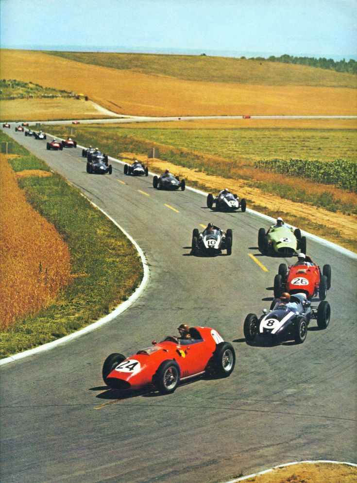
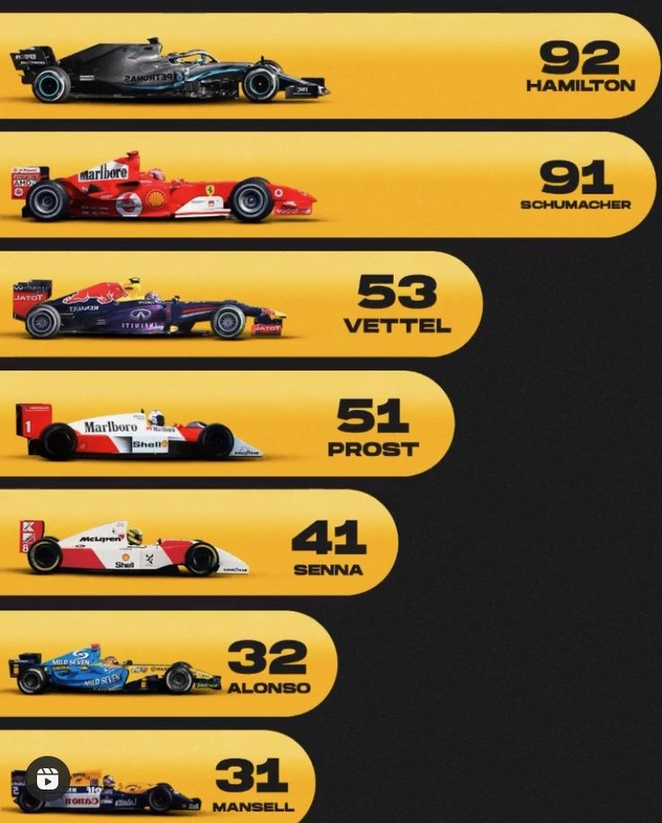
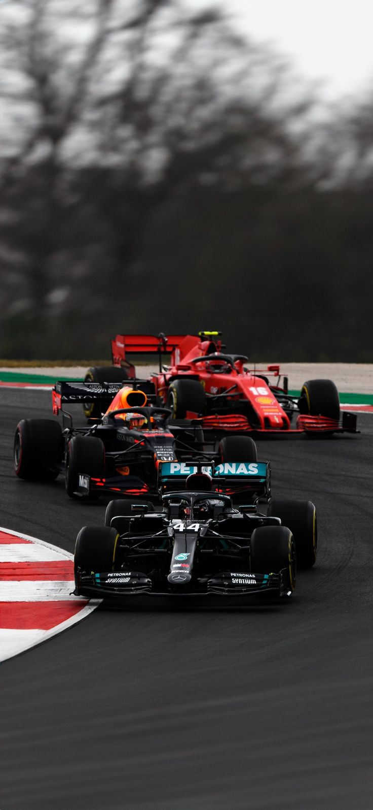
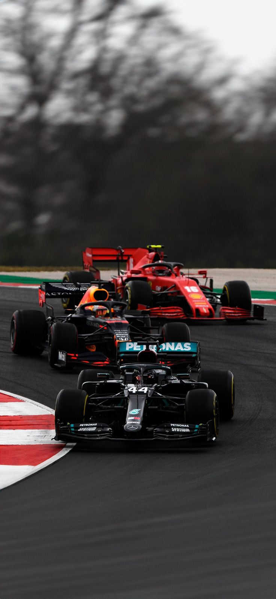
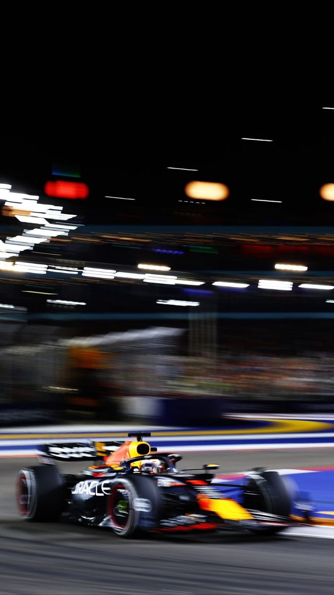
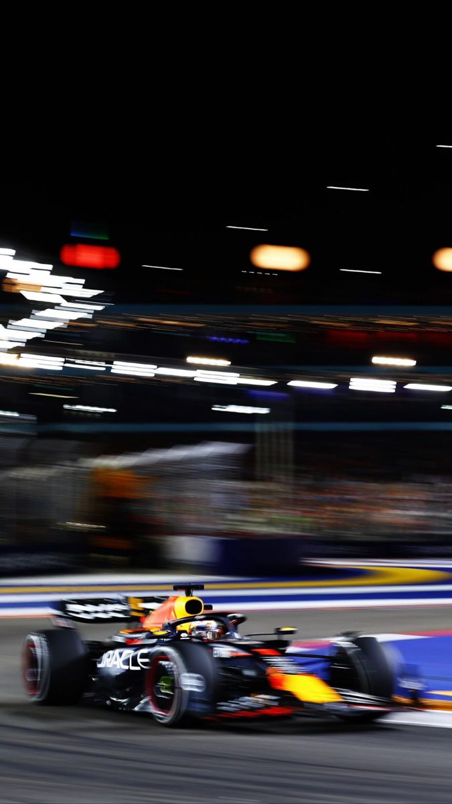

Historia de la F1 üèÅ
La fórmula 1 nació en 1950 y se ha convertido en la categoria reina del automovilismo. A lo largo de las décadas ha evolucionado en tecnología, reglamentos y espectáculos.
Grandes momentos como las rivalidades entre Senna y Prost, los récords de Schumacher y Hamilton, o la era Híbrida con dominio de Mercedes y Red Bull, han marcado su historia
La primera carrera se celebró en Silverstone, Inglaterra, y desde entonces ha sido la categoria reina del automovilismo.
A lo largo de las décadas, la F1 ha evolucionado de forma impresionante, desde autos simples sin aerodinámica hasta sofisticados monoplazas con tecnología de punta. Grandes figuras como Juan Manuel Fangio , Ayrton Senna, Michael Schumacher y Lewis Hamilton han marcado la historia con sus hazañas.
La competición no solo destaca por la habilidad de los pilotos, sino también por la innovación técnica de las Escuderías como Ferrari, Mclaren, Mercedes, y Red Bull.
Con cada temporada, la F1 escribe nuevos capitulos llenos de emoción, drama y velocidad.
Equipos F1
Ferrari

Fundado en 1950, es el equipo más exitoso y longevo de la F1. Pilotos legendarios como Schumacher y Lauda han vestido el rojo.
McLaren

Con una rica historia desde los 60, ganó títulos con Senna y Prost. Sigue siendo un competidor clave.
Mercedes

Dominó la era híbrida desde 2014 con Hamilton y Rosberg.
Red Bull

Innovador y agresivo, ganó 4 títulos con Vettel y ahora domina con Verstappen.
Williams

Campeones históricos en los 80 y 90. Su legado es icónico.
Alpine

Sucesor de Renault. Ganó títulos con Alonso en 2005 y 2006.
Aston Martin

Renació como marca en F1 en 2021. Diseño elegante y apuesta fuerte.
Haas

Equipo estadounidense desde 2016. Siempre luchando.
Racing Bulls

Equipo hermano de Red Bull, antes Toro Rosso. Primer victoria de Vettel.
Kick Sauber

Sauber compite como Stake F1 y colaborará con Audi. Fuerte historia.
Pilotos Temporada 2025

Max Verstappen üèÜ
Países Bajos – Red Bull Racing. Campeón dominante desde 2021.

Yuki Tsunoda
Japón – Red Bull (ex AlphaTauri). En desarrollo sólido.

Lewis Hamilton
Reino Unido – Ferrari. Busca cerrar su carrera con el equipo legendario.

Charles Leclerc
Mónaco – Ferrari. Rápido a una vuelta, busca consolidarse campeón.

Lando Norris
Reino Unido – McLaren. Talento joven con gran popularidad.

Oscar Piastri
Australia – McLaren. Rápido y preciso, futura estrella.

George Russell
Reino Unido – Mercedes. Asume liderazgo tras salida de Hamilton.

Kimi Antonelli
Bolonia Italia – Hijo del piloto de autos deportivos Marco, este nativo de Bolonia fue descubierto por Mercedes durante una carrera en el karting que lo vio recolectar una cantidad apenas creíble de trofeos de ganadores.

Alexander Albon
Tailandia – Piloto talentoso con gran historia en la F1.

Carlos Sainz
España – Piloto fuerte, rápido y confiable.

Pedro Gasly
Francia – Alpine. Talento con victoria, en consolidación.

Franco Colapinto
Australia – Alpine. Promovido piloto titular en 2025.

Fernando Alonso
España – Aston Martin. El más experimentado y ambicioso.

Lance Stroll
Canadá – Aston Martin. Busca regularidad en su rendimiento.

Esteban Ocon
Francia – Mercedes. Nuevo en el equipo, busca demostrar su valor.

Oliver Bearman
Reino Unido – Haas. Promesa de Ferrari, debutó en 2024.

Liam Lawson
Nueva Zelanda – Piloto reserva Red Bull con gran talento.

Isaac Hadjar
Finlandia – Stake F1 (Sauber). Líder del equipo hacia Audi.

Gabriel Bartoletó
Brasil – Debut en F1 y esperanza nacional.

Nico Hülkenberg
Alemania – Piloto con talento pero sin equipo elite.

 

 
